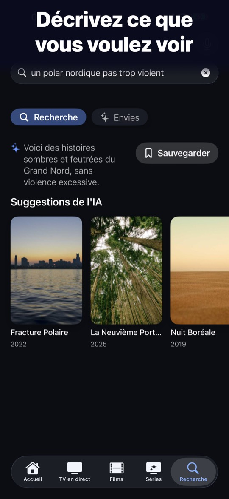

Le lecteur IPTV pour Apple TV et iPhone, sans pub
AuraTV est un lecteur : vous apportez votre propre source M3U ou Xtream, et AuraTV n'en fournit aucune. L'application ne fournit aucun contenu.
- Gratuit.
- Sans pub.
- Sans traçage.
- Sans compte.

Ce que fait AuraTV
Recherche en langage naturel
Décrivez ce que vous avez envie de regarder, AuraTV+ vous propose des idées. Essai gratuit de 7 jours, puis 2,99 € par mois ou 19,99 € par an. Le reste de l'application reste gratuit.
Multivue jusqu'à 9 écrans
Affichez jusqu'à 9 flux en même temps, selon la puissance de votre appareil.
Contrôle parental actif d'office
Le contenu pour adultes de votre fournisseur est masqué dès l'installation. Un code à 4 chiffres permet de l'afficher.
10 langues
L'application est traduite en dix langues.
iPhone, iPad et Apple TV
Une seule application, pensée pour le doigt comme pour la télécommande.